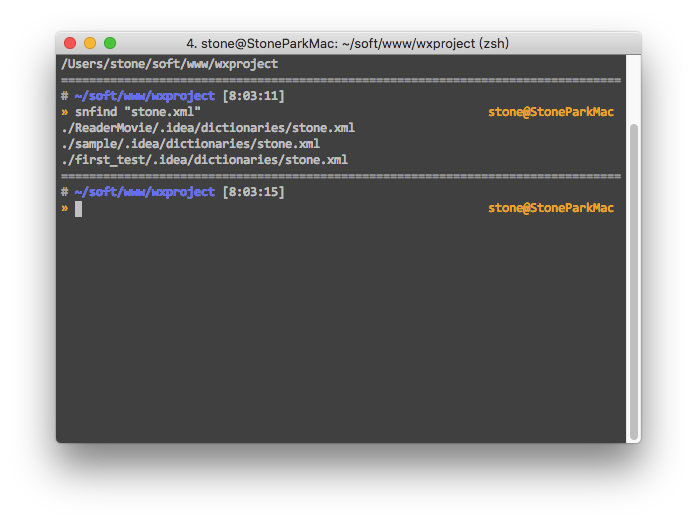
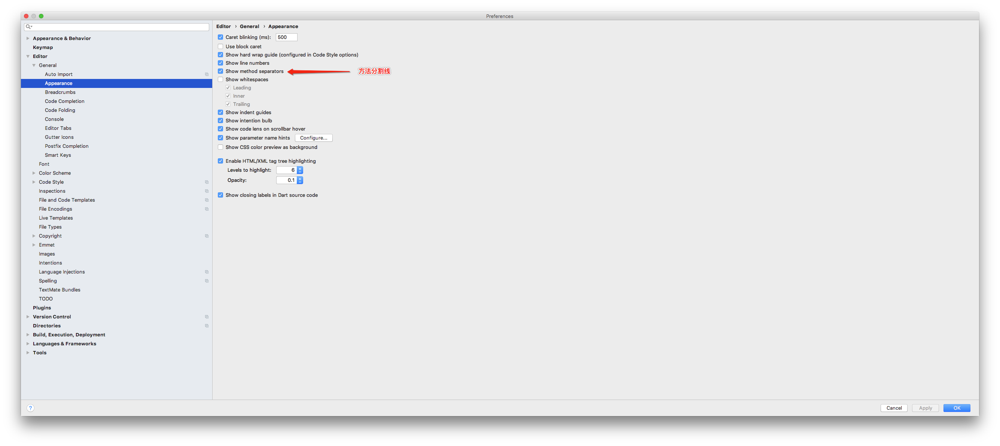
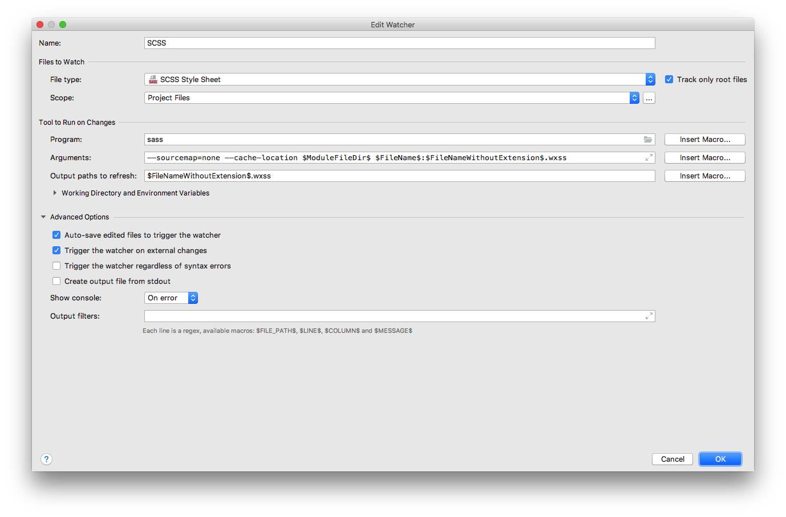

wechat-record
console.log('hello world')
陌生单词


css实现一行文字居中，多行文字左对齐
https://www.cnblogs.com/flxy-1028/p/6079681.html
<text class="post-title"><text class="post-title-inside">{{item.title}}</text></text>
.post-title {
/*当文字为一行是，则P的宽度小于div的宽度，p标签居中显示在盒子内，文字也就居中了 ;当大于一行时，P的宽度和div的宽度是一致的 ,文字就居左对齐了*/
width : 90%;
text-align : center;
font-size : unit(34, rpx);
font-weight : bold;
color : #333333;
/*display: inline-block使P的宽度根据文字的宽度伸缩 */
.post-title-inside {
text-align : left;
display : inline-block
}
// 垂直方向用px, 水平方向用 rpx | 经验 , 高度不要钱, 宽度得适配
}
微信小程序 列表渲染 wx:for
https://www.w3cschool.cn/weixinapp/weixinapp-list.html
微信小程序用到block时的一个坑
https://www.cnblogs.com/wxx-17-5-13/p/8799450.html
最近要写微信小程序，大致浏览了一下官网看到for循环可以写在view和block标签里。
用在view中只能应用单个节点。比如：
<view wx:for="{{array}}" wx:for-index="idx" wx:for-item="itemName">
{{idx}}: {{itemName.message}}
</view>
<view wx:for="{{[1, 2, 3, 4, 5, 6, 7, 8, 9]}}" wx:for-item="i">
<view wx:for="{{[1, 2, 3, 4, 5, 6, 7, 8, 9]}}" wx:for-item="j">
<view wx:if="{{i <= j}}">
{{i}} * {{j}} = {{i * j}}
</view>
</view>
</view>
用在block中可以渲染一个包含多节点的结构块。比如：
<block wx:for="{{[1, 2, 3]}}">
<view> {{index}}: </view>
<view> {{item}} </view>
</block>
今天遇到到一个问题：我想让block中循环输出的内容横向布局......
官网看了好几遍，网上搜了好久依然没有结果...
在看慕课视频时听到老师一句：block其实没啥意义，就相当于一个括号..
所以要让block中循环输出的内容横向布局只需要在block外面嵌套一个view标签就行233333
<view style=“display='flex'”>
<block wx:for="{{[1, 2, 3]}}">
<view> {{index}}: </view>
<view> {{item}} </view>
</block>
</view>
ngrok
rpx scss 解决

rpx 不同的解决方案
https://blog.csdn.net/lulitianyu/article/details/83240864
wechat 命令行工具
https://developers.weixin.qq.com/miniprogram/dev/devtools/cli.html
在 微信开发者工具 的 设置 - 编辑器 中勾选文件保存时自动编译小程序，可实现自动刷新。注意：其它选项请不要勾选！！！
无语... 竟然会有这种坑... https://github.com/issaTan/wap-cli